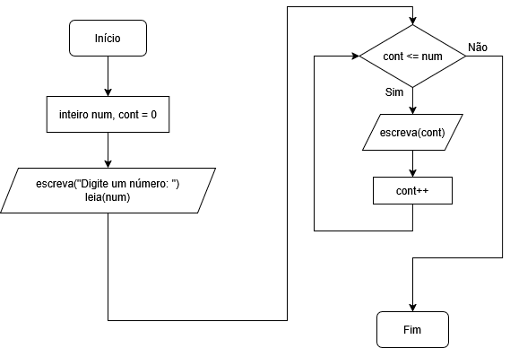
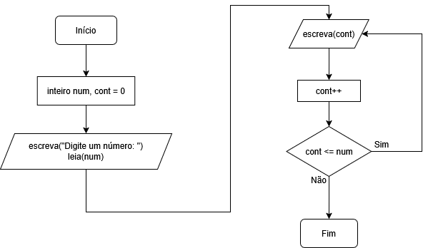
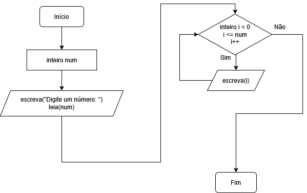

Existem três tipos de laços de repetição, basicamente. As estruturas de repetição servem para repetir instruções no código automaticamente. Elas usam uma condição lógica (verdadeiro ou falso) e continuam repetindo enquanto essa condição for verdadeira. Isso é útil para repetir cálculos, mostrar listas de números, pedir dados várias vezes, etc.
O enquanto é um laço que repete enquanto a condição for verdadeira. A condição é verificada antes de executar o bloco. Use quando não sabemos quantas vezes vai repetir.
Veja um exemplo simples:
programa {
funcao inicio() {
inteiro num, cont = 0 // Atribui 0 a num e a cont
escreva("Digite um número: ")
leia(num)
enquanto(cont <= num) {
escreva(cont, "\n")
cont++
}
}
}
Veja o fluxograma desse código:
É parecido com o enquanto, mas no faca enquanto o bloco é executado pelo menos uma vez, pois a condição só é verificada depois. Use quando queremos garantir que o código rode ao menos uma vez.
Veja um exemplo:
programa {
funcao inicio() {
inteiro num, cont = 0 // Atribui 0 a num e a cont
escreva("Digite um número: ")
leia(num)
faca {
escreva(cont, "\n")
cont++
}
enquanto(cont <= num)
}
}
No código acima, mesmo que digitemos um número negativo (que geraria a condição falsa), o laço é executado uma vez porque isso é verificado depois da execução do mesmo.
Veja o fluxograma do código acima:
O para é um laço com controle automático, ideal quando sabemos exatamente quantas vezes queremos repetir. Tem três partes divididas por ponto-e-vírgula: início, condição, passo.
Veja um exemplo de uso:
programa {
funcao inicio() {
inteiro num
escreva("Digite um número: ")
leia(num)
para(inteiro i = 0; i <= num; i++) { // Dividido em três partes por ponto-e-vírgula: Início, condição e passo.
escreva(i, "\n")
}
}
}
Veja o fluxograma desse código:
PS: Tome muito cuidado com laços infinitos, pois podem fazer uma execução no programa que nunca vai terminar, e pode travar seu programa.
Em laços de repetição, principalmente os infinitos, podemos encontrar o pare e o continue
, que funcionam assim:
continue: Pula para a próxima repetição do laço. Ou seja, ignora o restante do código dentro do enquanto e volta para o início do loop.
pare: Interrompe o laço enquanto. Sai completamente do loop, como se ele tivesse terminado.No entanto, o continue
não existe por padrão no Portugol Studio, mas a maioria das linguagens o têm.
Veja um exemplo de um enquanto infinito, mas que é controlado e tem uma condição de parada com pare:
programa {
funcao inicio() {
inteiro num, cont = 0
escreva("Digite um número: ")
leia(num)
enquanto(verdadeiro) { // Laço infinito
cont++
se(cont > num) { // Entra na condição e interrompe o laço com pare
pare
}
// Outro se, independente
se(cont % 2 == 0) { // Simulando o continue que não existe no Portugol Studio, para escrever só os pares
escreva(cont, "\n")
}
}
}
}
Um array (também chamado de vetor quando é unidimensional) é uma variável composta, é como uma caixinha que guarda várias informações do mesmo tipo usando um único nome. Em vez de criar várias variáveis separadas, você cria uma variável que armazena várias posições. Cada posição de um vetor é chamado de índice e é contado a partir do 0.
Veja um exemplo simples de uso de um vetor:
programa {
funcao inicio() {
caracter vogais[5]
vogais[0] = 'A'
vogais[1] = 'E'
vogais[2] = 'I'
vogais[3] = 'O'
vogais[4] = 'U'
escreva(vogais[0], "\n")
escreva(vogais[1], "\n")
escreva(vogais[2], "\n")
escreva(vogais[3], "\n")
escreva(vogais[4], "\n")
}
}
Inclusive, podemos, de forma mais inteligente, uma um laço para pra que não precise repetir código (aí vemos a utilidade dos laços de repetição):
programa {
funcao inicio() {
caracter vogais[5]
vogais[0] = 'A'
vogais[1] = 'E'
vogais[2] = 'I'
vogais[3] = 'O'
vogais[4] = 'U'
para(inteiro i = 0; i < 5; i++) {
escreva(vogais[i], "\n")
}
}
}
No caso acima, nós declaramos a variável composta com 5 posições, e preenchemos cada uma das posições com um valor único, e depois exibimos cada uma dessas posições.
Veja um exemplo com inteiros e ordenação dos dados em ordem crescente:
programa {
funcao inicio() {
const inteiro TAM = 7
inteiro dezenas[TAM]
inteiro i, aux, cont
dezenas[0] = 20
dezenas[1] = 50
dezenas[2] = 10
dezenas[3] = 40
dezenas[4] = 70
dezenas[5] = 30
dezenas[6] = 60
escreva("\nArray na ordem original:\n\n")
para(i = 0; i < TAM; i++) {
escreva(dezenas[i], "\n")
}
// Ordenando array com modo "bubblesort":
para(cont = 1; cont < TAM; cont++) {
para(i = 0; i < TAM - 1; i++) {
se(dezenas[i] > dezenas[i + 1]) {
aux = dezenas[i]
dezenas[i] = dezenas[i + 1]
dezenas[i + 1] = aux
}
}
}
escreva("\nArray ordenado:\n\n")
para(i = 0; i < TAM; i++) {
escreva(dezenas[i], "\n")
}
}
}
PS: Note que temos dois laços para aninhados. Quando você tem um para dentro de outro para, o funcionamento acontece assim:
Temos também os arrays bidimensionais, conhecidos também como matrizes. Matrizes são como tabelas dentro do seu programa. Enquanto um vetor tem apenas uma linha de valores, a matriz possui linhas e colunas.
Podemos utilizar matrizes para organizar dados em formato de tabela, como notas de alunos, horários, etc.
Veja um exemplo de matriz com números, onde os pares ficam em uma linha, e os ímpares em outra linha, além dos para aninhados para exibir os mesmos:
programa {
funcao inicio() {
inteiro numeros[2][5]
// Linha 0
numeros[0][0] = 0
numeros[0][1] = 2
numeros[0][2] = 4
numeros[0][3] = 6
numeros[0][4] = 8
// Linha 1
numeros[1][0] = 1
numeros[1][1] = 3
numeros[1][2] = 5
numeros[1][3] = 7
numeros[1][4] = 9
para(inteiro l = 0; l < 2; l++) { // Linhas
para(inteiro c = 0; c < 5; c++) { // Colunas
escreva(numeros[l][c], " ") // Não pula linha, só dá espaço
}
escreva("\n") // Pula de linha, executado após o para inteiro terminar o laço dele
}
}
}
Aí, ele exibirá como em uma tabela mesmo.
No caso das matrizes, o primeiro número representa a linha, e o segundo a coluna.
Até agora, usamos apenas procedimentos e funções internas do próprio Portugol Studio, como a escreva, leia e a função inicio, que conforme explicado, é a função padrão que o interpretador executa primeiro por padrão. No entanto, podemos criar nossos próprios procedimentos e funções.
Um procedimento serve para organizar o código e evitar repetições. Você chama o procedimento, ele faz alguma coisa (mostrar uma mensagem, calcular algo, limpar a tela, etc.) e termina ali, sem retornar resultado.
No Portugol Studio, um procedimento normalmente usa a palavra funcao. Veja um exemplo simples de criação de um procedimento. Ele deve ser criado fora da função inicio, mas dentro da estrutura programa:
programa {
funcao inicio() {
saudacao() // Aqui a função é invocada, ou seja, executada
}
funcao saudacao() {
escreva("Bom dia!")
}
}
No caso acima, o procedimento saudacao deve ser chamado dentro da função principal (inicio) para ser executado. A chamada é feita usando o nome do procedimento seguido de parênteses. A chamada pode ser chamada também de execução ou invocação de um procedimento.
Uma vez criada a função ou procedimento, ela pode ser chamada quantas vezes precisarmos, por exemplo:
programa {
funcao inicio() {
saudacao() // Invocação 1
saudacao() // Invocação 2
saudacao() // Invocação 3
}
funcao saudacao() {
escreva("Bom dia!")
}
}
PS: Podemos usar um laço de repetição no exemplo acima também.
Podemos também passar parâmetros para um procedimento, como variáveis. No exemplo abaixo, criamos um procedimento que recebe um nome e exibe uma saudação personalizada. Quando chamamos o procedimento, enviamos o nome como argumento. Veja o código acima alterado:
programa {
funcao inicio() {
saudacao("Fulano") // Mostra Bom dia pra Fulano
saudacao("Beltrano") // Faz o mesmo com Beltrano
saudacao("Sicrano") // E com Sicrano
}
funcao saudacao(cadeia nome) {
escreva("Bom dia, ", nome, "!\n")
}
}
Exemplo com números:
programa {
funcao inicio() {
soma(10, 5)
}
funcao soma(inteiro n1, inteiro n2) {
escreva("A soma é ", (n1 + n2), "!\n")
}
}
PS: Note que colocamos a soma entre parênteses, pra não causar conflitos no interpretador Portugol, que pode confundir o operador da soma com concatenação.
Por padrão, um procedimento não retorna nada, por isso é considerado uma função vazia
.
A nomeação de procedimentos e funções seguem basicamenteas mesmas regras de variáveis e constantes (e consequentemente, parâmetros):
_), no entanto, não pode começar com um número, sempre deve começar com uma letra. A partir do segundo caractere pode ter números e underlines.
#,
@,
!, etc.
funcao, escreva, se, enquanto e outras que veremos mais pra frente, incluindo as palavras já vistas como inteiro, caracter e logico).enviar().
Também, para identificação e leitura mais precisa, é ideal seguir também essas regras:
cadastrar_usuario() ou cadastrarUsuario().divisao() faz mais sentido do que uma função com o nome x()).